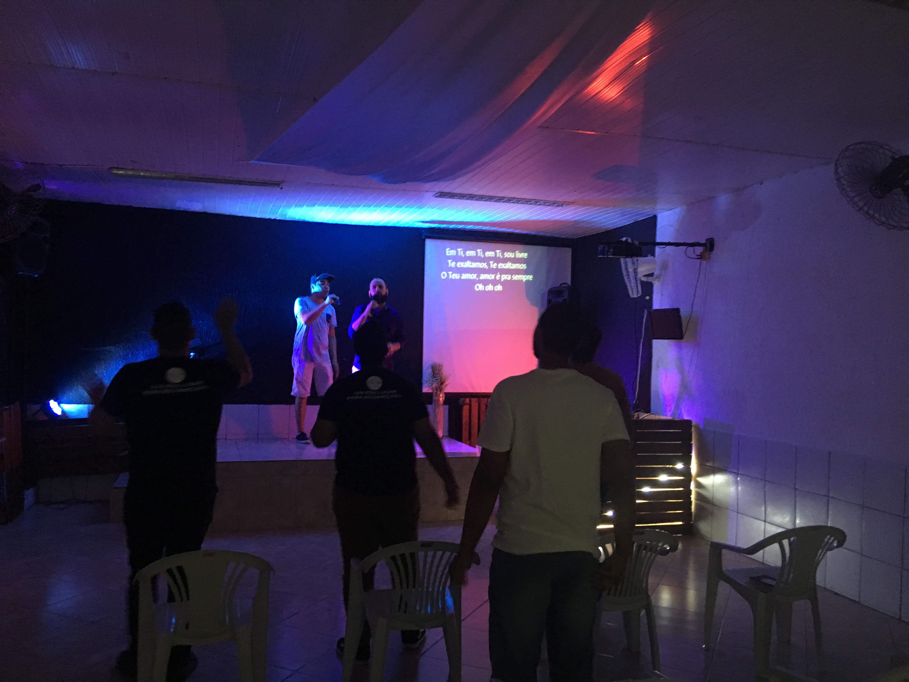

A ireja inicio no ano de 2010, na cidade de Porto Velho-RO, os moradores sentiam a falta de um local sagrado para reunir suas orações. A fé era algo profundo entre eles, mas não havia uma igreja onde pudessem se encontrar e celebrar. Foi então que Frei João, um monge viajante, ao passar pela aldeia, se comoveu com a devoção do povo e decidiu liderar a construção de uma igreja. Com o esforço conjunto de todos, a obra foi avançando. Os moradores doavam materiais e mão de obra, cada um contribuindo com o que podia. Frei João, além de coordenar a construção, guiava espiritualmente o povo, incentivando-os com palavras de fé e esperança, até que, finalmente, a igreja ficou pronta, com uma torre e um sino que logo seria ouvido por toda a região. No dia da consagração, uma luz divina atravessou as janelas da igreja e iluminou o altar, fazendo todos sentirem que aquele lugar era abençoado. A partir daquele momento, a igreja de Santa Clara tornou-se um ponto de peregrinação, onde milagres e bênçãos eram atribuídos à fé e à união da comunidade..
